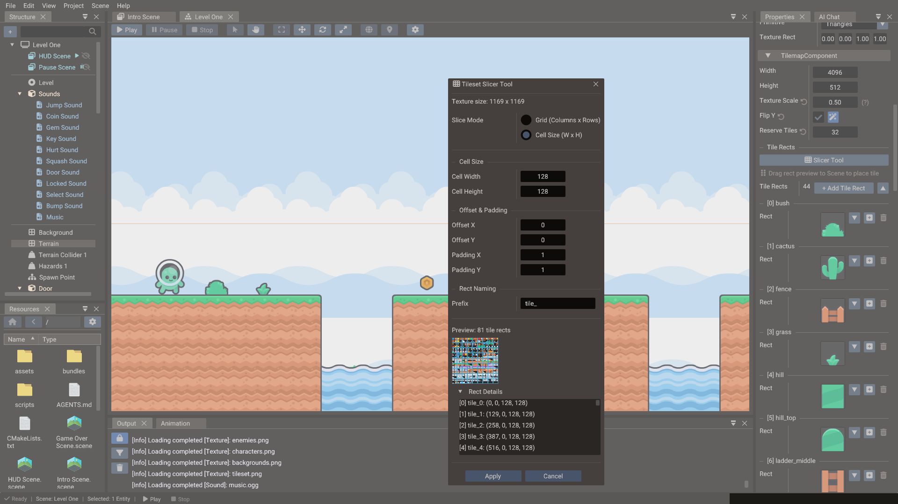
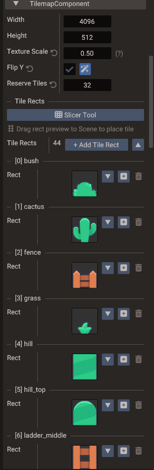

Tileset Slicer¶
The Tileset Slicer tool divides a tilemap's texture into uniformly-sized tile rects.
Each rect gets a name and a numeric ID — its index in the tilemap's rect list. Those IDs
are the values you store in TileData cells and reference from Tilemap objects in
script.

Opening the Tileset Slicer¶
Select an entity with a Tilemap component. In the Properties window, click Slicer Tool in the component's Tile Rects section. The slicer cuts the tilemap's texture; when the tilemap uses several textures, pick the one to slice at the top of the dialog.
Setting up the grid¶
| Field | Purpose |
|---|---|
| Grid (Columns x Rows) / Cell Size (W x H) | Slice by tile count or by tile size in pixels |
| Columns / Rows | Number of tiles across and down; the tile size is derived from the texture size |
| Cell Width / Cell Height | Pixel size of one tile; the number of columns and rows is derived |
| Offset X / Y | Pixel inset of the first tile |
| Padding X / Y | Pixel gap between tiles, for tilesets with gutters |
| Prefix | Rect name, followed by its number: tile_0, tile_1, … |
The Preview shows how many rects the grid produces, and Rect Details lists each one in pixels. Click Apply to replace the rects of the sliced texture; rects that belong to the tilemap's other textures are kept, and the new ones follow them, numbered left to right, top to bottom. The change is one undoable step.
Tile IDs¶
Tile IDs are plain integers. In a tilemap with a single texture, the tile at column 0,
row 0 is ID 0; column 1, row 0 is ID 1; and so on. Use these IDs when filling
TileData in script.
-- Create a tilemap, assign a tileset texture, and place tiles
tilemap = Tilemap(scene)
tilemap:setTexture("world/tileset.png")
-- Define texture regions (rects), then place tiles that reference them
tilemap:addRect(Rect( 0, 0, 32, 32)) -- rect ID 0
tilemap:addRect(Rect(32, 0, 32, 32)) -- rect ID 1
tilemap:addTile(0, Vector2( 0, 0), 32, 32) -- rect ID, position, width, height
tilemap:addTile(1, Vector2(32, 0), 32, 32)
-- ... or paint with the rect IDs generated by the slicer directly
Painting tiles in the editor¶
After slicing, the TilemapComponent's Tile Rects list shows a preview of each rect. To place tiles:
- Select the Tilemap entity.
- In the Properties window, find the rect in the Tile Rects list.
- Drag its preview into the viewport to place a tile there.

When arranging placed tiles in the Scene View, enable Snap tile in the viewport gear menu so drops and gizmo moves snap to each tile's width and height — useful for packing tiles flush without tuning the global grid.
Collision tiles¶
Tiles carry no collision data. Give the level's solid areas their own entity with a 2D Physics Body — for example Chain or Polygon shapes that follow the ground — and keep the tilemap purely visual. See Physics.
Tips¶
- Use power-of-two tile sizes (16×16, 32×32, 64×64) for consistent UV mapping.
- Keep the tileset image as one file even if the game uses multiple tile themes — tile ID ranges can be managed logically in data.
- For sprite animation and character frames, use the Sprite Slicer instead.
- Export-friendly naming: use lowercase filenames and avoid spaces so tile resource paths stay consistent across platforms.